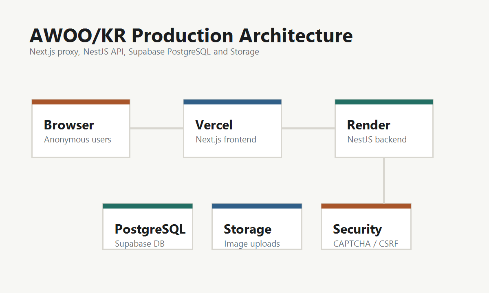

AWOO Backend
AWOO/KR에서 NestJS를 사용해 게시판, 댓글, 업로드, 신고, 관리자 기능을 모듈로 나누어 만들어봤습니다.
NestJS
TypeScript
API Server
About
컴퓨터소프트웨어학과 4학년으로, 웹 서비스의 기획부터 프론트엔드, 백엔드, DB 구성, 배포까지 직접 해보았습니다. 현재는 2026년 하반기 백엔드 개발자 취업을 목표로 프로젝트 경험과 GitHub를 정리하고 있습니다.
관심사는 백엔드이고, 앞으로 보안과 인프라 쪽도 조금씩 배워보고 싶습니다. 그래서 프로젝트도 직접 배포해본 경험, 백엔드 기본기 연습, 보안 학습을 나눠서 정리하고 있습니다.
Skills
AWOO/KR에서 NestJS를 사용해 게시판, 댓글, 업로드, 신고, 관리자 기능을 모듈로 나누어 만들어봤습니다.
AWOO/KR에서 PostgreSQL과 Prisma를 사용해 게시판, 글, 댓글, 첨부파일, 신고, 관리자 세션 데이터를 다뤄봤습니다.
AWOO/KR에서 Vercel, Render, Supabase를 사용해 프론트엔드, 백엔드, DB, Storage를 나누어 배포해봤습니다.
Projects
Built / Main Project
배포 경험익명 이미지 게시판 스타일의 커뮤니티 서비스입니다. 게시글, 댓글, 이미지 업로드, 신고/관리자 기능, CAPTCHA/CSRF 같은 기능을 직접 만들어보며 서비스 구조를 배웠습니다.
Planned / Project 2
제작 예정백엔드 기본기를 정리하고 확인하기 위한 서비스입니다. 회원가입, 로그인, 게시글/댓글 CRUD, 검색, 페이지네이션, 좋아요/북마크를 구현할 예정입니다.
Planned / Project 3
제작 예정보안 쪽을 공부하기 위한 소규모 프로젝트입니다. 비밀번호 hash, 로그인 실패 제한, 계정 잠금, refresh token rotation, 로그 기록을 다뤄볼 예정입니다.
Project Note
AWOO/KR은 이 포트폴리오의 전부가 아니라, 현재까지 가장 깊게 만들어본 대표 프로젝트입니다. 이 프로젝트를 만들며 서비스 기능 작성, 배포, 관리자 기능, 보안 관련 개념을 조금씩 경험해볼 수 있었습니다.

일반 회원 인증 없이 작성자가 본인의 글을 수정/삭제할 수 있게 하려면 어떻게 해야 할지 고민했고, 작성자 비밀번호를 hash로 저장해 확인하는 방식을 써봤습니다.
Vercel, Render, Supabase로 나누어 배포해보며 프론트엔드, 백엔드, DB, Storage가 어떻게 연결되는지 경험했습니다.
CAPTCHA token 재사용 방지, 관리자 session cookie, CSRF token, 업로드 삭제 token 같은 개념을 프로젝트에 적용해봤습니다.
Roadmap
GitHub README, 백엔드 문서, 포트폴리오 설명 정리
백엔드 기본기, 인증/인가, CRUD, 검색, 페이지네이션 연습
로그인 보안, 실패 제한, token, audit log 위주로 학습
GitHub, 포트폴리오, 이력서 업데이트 후 9월부터 지원
Contact